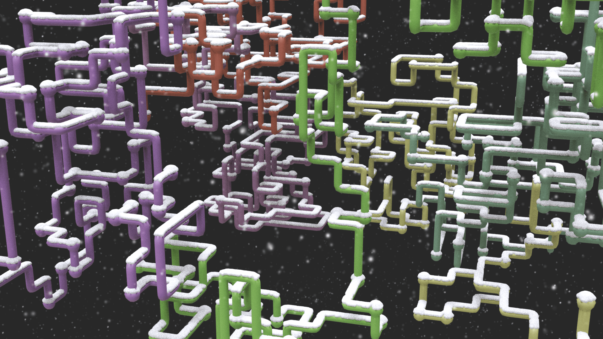
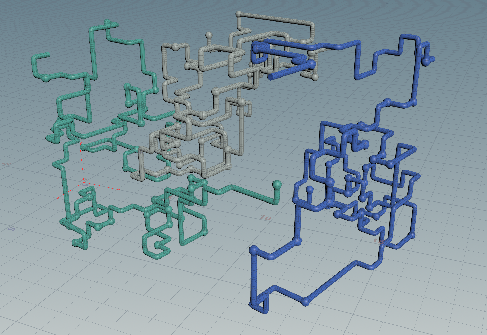

Updated Feb. 24, 2020
Download the OpenHDA for Houdini here: Direct Download

For this project, I set out to recreate the classic Windows 3D pipes screensaver that I used to watch for hours at my Grandma's house as a kid. Watching footage of the gorgeous old screensaver, I made a list of rules the pipes appear to follow, such as:
1. Pipes start with a single spherical joint and a small segment. Each frame, a pipe is extended by one segment.
2. Start points, colors, paths, and overall scene rotation are mostly random.
3. Pipes never intersect with themselves or other pipes.
4. Pipes are limited to an area (mostly) visible on-screen.
…and so on. In trying to figure out the best way to achieve this random pattern of movement, I started with an L-system with a simple set of turtle commands: it extended by one segment each frame and had equal probability of going straight, turning right, left, forward, or backward in space. However, this came with two limitations that I wasn't able to overcome: the line created by the system had no way of detecting if it was going to overlap itself, and it was very difficult to keep the system in a certain boundary.
Ultimately, I chose to start over using a VEX based system with a point array, with simple Python variables in charge of randomizing several parameters (start points, colors, rotation, etc). The VEX system starts each pipe at a random point and then checks each possible neighboring point for itself or another pipe before moving there.



February 2020: When I first created the pipes system, I used a foreach loop over six VEX scripts that iterated per frame. This was very slow, and also meant that I was limiting the system to six pipes, which each had a SOP chain building them after deleting the other points. Furthermore, reducing the number of pipes only removed the others visually, instead of dynamically calculating for each pipe. This clunky system also used specific variables for each pipe's color, rather than dynamically generating random colors from one value. These were all problems I wanted to address, and in doing some research found this post on the entagma.com site (full of a lot of wonderful tutorials and project ideas).
I loved that they used a dynamic system to generate source points from geometry using a VDB, instead of duplicating a grid of points like I was, so I immediately updated my project to match their source system. I also noted that they were using a solver SOP, instead of a foreach loop, and were dynamically generating any number of pipes inside the solver using a for loop. Updating my project with this system, I was also able to assign an attribute (@pipe_n) to identify each pipe, and color them randomly by multiplying a single random color by n (where n is the value of the pipe). This all worked beautifully — except for one (somewhat rare) frustrating case.
Because in the entagma.com system the pipes were being created in a for loop inside the solver sop, two pipes would occasionally pick the same point to move to next, resulting in an intersection (this occurs because the for loop is evaluated for every pipe before the points are marked as taken — meaning multiple pipes could “take” the same point before it was set as off-limits). The solution involved a new SOP level foreach loop, inside the solver node — this time for each pipe. The iteration value of this loop is fed to the script, which means the points are updated as each pipe segment is created, not just once per frame. Hooray! Now the pipes will never move to the same point at once, and you can run as many pipes as you want at once.

© 2025 Noah Gunther